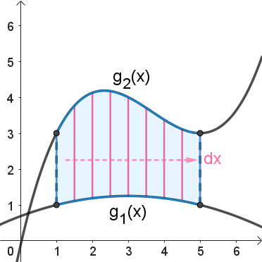
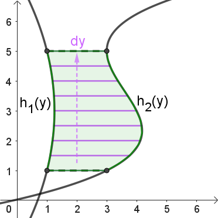

Double & Polar Integrals
Multiple Integrals
Multiple Integrals
We now want to expand our ability to evaluate double integrals over rectangular regions to double integrals over non-rectangular regions. So how can we generalize the process?
Here is the GeoGebra graph from the video above, followed by some generalizations we can make about how to find the volume under a surface over a non-rectangular region.
Consider the following illustrations when trying to decide whether to use vertical slices and integrate \(dydx\) or to use horizontal slices and integrate \(dxdy\).
When a region \(R\) is bounded above by \(y=g_2(x)\) and below by \(y=g_1(x)\), we want to use vertical slices and integrate \(dydx\).
Each vertical slice represents a cross-section area having a base with length given by \(g_{2}(x) - g_{1}(x)\) and a height given by the surface function \(z = f(x,y)\). These cross-section areas are determined by the first \(dy\) integration. We then sum up all of these cross-section areas by integrating \(dx\) from left to right, or in the direction of increasing values of \(x\).
The region \(R\) is bounded to the right by \(x=h_2(y)\) and to the left by \(x=h_1(y)\), so we want to use horizontal slices and integrate \(dxdy\).
Each horizontal slice represents a cross-section area having a base with length given by \(h_{2}(y) - h_{1}(y)\) and a height given by the surface function \(z = f(x,y)\). These cross-section areas are determined by the first \(dx\) integration. We then sum up all of these cross-section areas by integrating \(dy\) from bottom to top, or in the direction of increasing values of \(y\).
Double Integral of \(f\) Over the Region \(R\): For a function \(z=f(x,y)\) defined over a region \(R\) in the \(x\)y-plane, the volume bounded under \(f\) over \(R\) can be computed using one of the following formulas.
If \(R\) is bounded by the functions \(y=g_1(x)\) and \(y=g_2(x)\) using vertical slices, then use the integral below.
\[\underset{R}{\mathop \iint}\, f(x,y)~dA = \int_{a}^{b} \int_{g_1(x)}^{g_2(x)}\, f(x,y)~dy~dx\]If \(R\) is bounded by the functions \(x=h_1(y)\) and \(x=h_2(y)\) using horizontal slices, then use the integral below.
\[\underset{R}{\mathop \iint}\, f(x,y)~dA = \int_{c}^{d} \int_{h_1(y)}^{h_2(y)}\, f(x,y)~dx~dy\]Example: Determine the volume of the solid shape below \(f(x,y) = 12xy^2\) and above the semicircle of radius 3 with \(x \ge 0\).
It is usually a good practice to sketch a graph of the domain or base region over which we are integrating. In this case, we have the circle \(x^2 + y^2 = 9\) with \(x \ge 0\).
Notice that if we draw vertical slices, we see that all of the lines touch the same curve at the top and bottom endpoints. While not impossible, this complicates how we could integrate in the \(dydx\) order. If instead, we draw horziontal slices, then we see that every line segment extends from \(x = 0\) to \(x = \sqrt{9-y^2}\). This means that region \(R\) can be described using the inequalities \(0 \le x \le \sqrt{9-y^2}\) and \(-3 \le y \le 3\). In other words, we can use the boundary functions \(h_{1} = 0\) and \(h_{2} = \sqrt{9-y^2}\).
\[\begin{align*} V &= \underset{R}{\mathop \iint}\, f(x,y)~dA \\ &= \int_{c}^{d} \int_{h_1(y)}^{h_2(y)}\, f(x,y)~dxdy \\ &= \int_{-3}^{3} \int_{0}^{\sqrt{9-y^2}}\, 12xy^2 ~dxdy \\ &= \int_{-3}^{3} \left( 6x^2y^2 \right) \biggr|_{0}^{\sqrt{9-y^2}} ~dy \\ &= \int_{-3}^{3} \left[ 6\left(\sqrt{9-y^2}\right)^2y^2 - 6(0)^2y^2 \right] ~dy \\ &= \int_{-3}^{3} \left[ 6\left(9-y^2\right)y^2 \right] ~dy \\ &= \int_{-3}^{3} 54y^2-6y^4 ~dy \\ &= \left( 18y^3 - \frac{6}{5}y^5 \right) \biggr|_{-3}^{3} \\ &= \left[ \left(18(3)^3 - \frac{6}{5}(3)^5\right) - \left(18(-3)^3 - \frac{6}{5}(-3)^5\right) \right] \\ &= 486 - \frac{1458}{5} + 486 - \frac{1458}{5} \\ &= \frac{1944}{5} = 388.8 \end{align*}\]So, the volume of the solid illustrated below is 388.8 cubic units. For a better view, minimize the expression list on the left side of the graph by clicking the button. You can then rotate the graph and zoom in or out.
Self-Check #4: Compute the volume below the function \(f(x,y) = 10x\sin{y}\) over the region \(R\), where \(R\) is the region in the \(xy\)-plane that is bounded by \(y=x^2\), \(y=0\), \(x=0\), and \(x=\frac{\pi}{2}\). (Use the most appropriate order of integration and Work through the integratals by hand. Enter your answer rounded to 2 decimal places)
(Answer: 0.85) -- First, we need to find the area of \(R\).
\[A = (2-0)\left(\frac{\pi}{2}-0\right) = (2)\left(\frac{\pi}{2}\right) = \pi\]Set up and evaluate the following integral.
\[\begin{align*} f_{avg} &= \frac{1}{A} \underset{R}{\mathop \iint}\, f(x,y)~dA \\ &= \frac{1}{\pi}\int_{0}^{\pi/2} \int_{0}^{2} x^2 \sin{y}~dx~dy \\ &= \frac{1}{\pi} \int_{0}^{\pi/2} \left( \frac{1}{3} x^3 \sin{y} \right) \biggr|_{0}^{2}~dy \\ &= \frac{1}{\pi} \int_{0}^{\pi/2} \left(\frac{8}{3}\sin{y}\right) - (0)~dy \\ &= \frac{1}{\pi} \int_{0}^{\pi/2} \frac{8}{3}\sin{y}~dy \\ &= \frac{8}{3\pi} \int_{0}^{\pi/2} \sin{y}~dy \\ &= \frac{8}{3\pi} \left( -\cos{y} \right)\biggr|_{0}^{\pi/2} \\ &= \frac{8}{3\pi} \left( -\cos{\left(\frac{\pi}{2}\right)} - \left( -\cos(0) \right)\right) \\ &= \frac{8}{3\pi} \left(0 + 1 \right) \\ &= \frac{8}{3\pi} \\ &\approx 0.85 \end{align*}\]©2024 M4thG33x (new window) Some Rights Reserved.